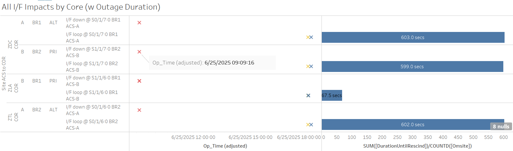
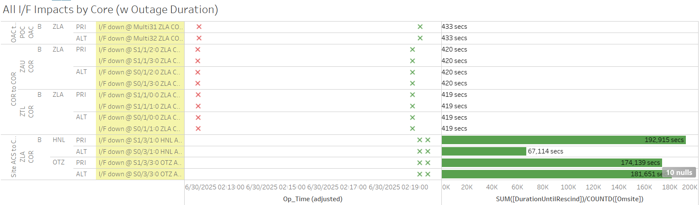

Weekly Highlights 20250625-20250702
6/24 - S15 Uncommanded Switchover / CM1 L1 Loss Message
- 6/24 20:54 - GUS Switchover - S15
- BR1 to Primary / CM1 to Backup;
Uncommanded CV Source chg for CMA GUS. CMA GUS then auto switched to BACKUP-- ref LIR 1004307824; GEO Selected CV Source changed to Unknown then to ZTL; may be related to flapping comms... Status logs show multipleL1 Loss Messagejust before switch to Backup. - 6/25 13:46 - GEO S15 Selected CV Source Change from ZTL->ZLA
- 6/26 07:20 - GUS Switchover - G30 - AP1 to Primary / BR2 to Backup to avoid double Primary Brewster situation
- 6/30 18:52 - CM1 received SE 738 CV-GUS Comm Fail for all C&Vs; event cleared after ~4 seconds... if CM1 was in Primary, this event may have induced another Switchover...
6/24 - POC OAC-A Overtemp
- 6/24 22:10 - POC OAC-A alarmed with overtemp; office having HVAC issues -- ref LIR 1004010024
- 6/25 08:03 - POC OAC-A alarmed with overtemp -
ESU has setup a portable AC unit while they T/S HVAC
6/25 - Brewster Comms Reduced Redundancy
- 6/25 09:09 - BR1 Ring 1 ALT / Ring 2 PRI + BR2
Ring 1 ALT / Ring 2 PRI comms down hard...
Both Brewsters currently
Primary...
ISR 0625-1746-- ref LIR 1004398324US ELECTRODYNAMICS Network engineer to advise FTI tested clean to Zayos handoff at Tukwila Washington. US Electrodynamics advised they don't provide T1 circuits anymore and they had to move out of their Co-located facility. US electrodynamics advised they notified people in FTI since april. US electrodynamics advised this circuit has been sunsetted at midnight pacific last night.

- Update: New Cross-connects ordered and awaiting installation
- Waiting on confirmation from FTI that circuits are ready, then circuit validation can be coordinated
6/25 - CM1 GUS Sig Gen Cables Replaced
- 6/25 22:38 - CM1 GUS to Maintenance to swap Sig Gen cables -- ref LIR 1004377624; Control Powered and restored to Backup at 6/25 23:38 -- SLES will monitor operation with new cable
6/25-7/1 - L1/L2 Bias Errors
- 6/25 18:14 - YFB L1/L2 Bias Error alarm
- 6/28 23:54 - OTZ L1/L2 Bias Error alarm
- 6/30 07:39 - MSD L1/L2 Bias Error alarm
- 7/1 13:48 - MPR L1/L2 Bias Error
- 7/1 19:23 - MMD L1/L2 Bias Error
- 7/1 19:52 - MTP L1/L2 Bias Error
6/26 - ZBW WRE-C RF Site Survey
- 6/26 19:25 - ZBW WRE-C RF Site Survey activities complete; Control Power and restored to Normal at 6/26 20:23
6/26 - CM1 GUS CV Source Unknown
- 6/26 19:33 - CM1 GUS CV Source Switch to Unknown (SE 511); switched back to ZLA after 2 seconds -- probably only avoided a switchover since it was in Backup...
6/23-6/27 - ZBW Phase Noise on WRE-A / WRE-B
- 6/23 15:04 - ZBW WRE-A and WRE-B to Maintenance
and Reset to address Phase Noise issue;
restored to Normal 6/23 15:35
-- note image below shows the effect of opening
and closing the WRE-B cabinet door
- 6/23 15:35 - ZBW L1/L2 Bias Error

- 6/27 11:26 - ZBW WRE-B to Maintenance Mode for
onsite troubleshooting;
EQ generates noise. SLE/CR REQ WRE-B to be in Maint mode to investigate-- ref LIR 1105019232; restored to Normal at 6/27 11:48
Various Comm Impacts
* Only captures major / long-term comm outages
YYR Comms
- 6/25 06:45 - YYR Ring 1 comms flapping; last event cleared at 6/25 07:12 (~355 seconds total)
- 6/26 14:51 - YYR ring 2 comms down hard; line cleared at 6/27 01:07 (~36945 seconds)
- 6/26 21:39 - YYR Ring 1 Comms down hard -- OFFLINE; line cleared at 6/26 21:43 (~234 seconds)
- 6/28 16:10 - YYR Ring 1 comms flapping; last event cleared at 6/28 17:23 (~95 seconds total)
- 7/1 17:42 - YYR Ring 1 comms flapping; last event cleared at 7/1 19:42 (~1041 seconds total)
CM1 Comms
- 6/25 15:58 - CM1 Ring 2 PRI comms flapping; last event cleared at 6/25 23:02 (~1879 seconds total)
- 6/26 15:57 - CM1 Ring 2 PRI comms flapping; last event cleared at 6/26 23:05 (~2195 seconds total)
- 6/27 17:03 - CM1 Ring 2 PRI comms flapping; last event cleared at 6/27 21:02 (~314 seconds total)
- 6/27 18:05 - CM1 Ring 1 PRI / Ring 2 ALT comms down hard; both lines cleared at 6/27 18:35 (~831 seconds)
- 6/30 16:54 - CM1 Ring 2 PRI comms flapping; last event cleared at 6/30 19:33 (~294 seconds total)
- 6/30 18:02 - CM1 Ring 1 PRI / Ring 2 ALT comms flapping; last events cleared at 6/30 18:56 (~465 seconds total)
- 6/30 20:45 - CM1 Ring 2 PRI comms flapping; last event cleared at 6/30 21:47 (~200 seconds total)
- 7/1 16:35 - CM1 Ring 2 PRI comms flapping; last event cleared at 7/2 22:56 (~1076 seconds total)
- 7/2 17:25 - CM1 Ring 2 PRI comms flapping...
OTZ Comms
- 6/25 16:57 - OTZ Ring 1 ALT comms flapping; last event cleared at 6/25 18:35 (~2084 seconds total)
- 6/25 17:05 - OTZ Ring 2 PRI comms flapping; last event cleared at 6/25 20:15 (~4817 seconds total)
- 6/26 18:57 - OTZ Ring 2 PRI comms flapping; last event cleared at 6/26 19:12 (~186 seconds total)
- 6/26 23:52 - OTZ Ring 1 PRI / Ring 2 ALT comms down hard; both lines cleared at 6/26 23:53 (~84 seconds)
- 6/27 23:52 - OTZ Ring 2 ALT comms down hard; line cleared after ZLA COR-B Reset at 6/30 02:19 (~181651 seconds)
- 6/28 01:57 - OTZ Ring 2 PRI comms down hard; line cleared after ZLA COR-B Reset at 6/30 02:19 (~174139 seconds)
- 7/1 12:05 - OTZ Ring 2 PRI comms flapping; last event cleared at 7/1 12:31 (~498 seconds total)
- 7/1 13:04 - OTZ Ring 2 PRI comms flapping; last event cleared at 7/1 22:38 (~14157 seconds total)
- 7/1 23:52 - OTZ Ring 1 PRI / Ring 2 PRI + ALT comms flapped for ~90 seconds
- 7/2 13:37 - OTZ Ring 2 PRI comms flapping; last event cleared at 7/2 19:52 (~12415 seconds total)
HNL Comms
- 6/25 19:07 - HNL Ring 1 ALT / Ring 2 PRI comms down hard...
- 6/27 16:12 - HNL Ring 1 ALT / Ring 2 PRI comms come back up to flapping until down hard at 6/27 17:32 (down since 6/25 19:07; ~167779 seconds total)...
- 6/27 18:42 - HNL Ring 1 ALT / Ring 2 PRI comms come back up to flapping until down hard again at 6/27 20:44 (~12592 seconds)...
- 6/28 18:47 - HNL Ring 1 ALT temporarily restored (down since 6/27 20:44; ~77958 seconds) then down hard again...
- 6/29 07:41 - HNL Ring 2 ALT comms down hard; line cleared after ZLA COR-B Reset at 6/30 02:19 (~67114 seconds)
- 6/30 02:12 - ZLA COR-B Router Reset to address HNL and OTZ comms down hard; all HNL/OTZ comm lines cleared

- 7/2 17:34 - HNL Ring 1 ALT / Ring 2 PRI comms down hard; both lines cleared after loopback events at 7/2 17:50 (~927 seconds)
Other Sites
- 6/25 06:41 - BRW/BET/OTZ Ring 1 PRI / Ring 2 ALT comms down hard; all lines cleared at 6/25 07:24 (~2569 seconds)
- 6/25 08:20 - BRW/BET/OTZ Ring 1 PRI / Ring 2 ALT comms down hard; all lines cleared at 6/25 09:30 (~4207 seconds)
- 6/30 19:14 - BET Ring 1 ALT / Ring 2 PRI comms flapping; last events cleared at 7/1 04:30 (~1874 seconds total)
- 6/30 22:09 - MMX Ring 1 comms down hard -- OFFLINE; line cleared at 7/1 06:29 (~8h 19m)
- 7/1 08:00 - JNU Ring 1 PRI / Ring 2 ALT comms down hard; both lines cleared at 7/1 08:40 (~2376 seconds)
- 7/1 11:03 - MTP Ring 1 comms down hard -- OFFLINE; line cleared at 7/1 16:19 (~5h 16m)
- 7/1 13:48 - Operator Reset ZTL COR-A Eth port; all MX Ring 1 comms impacted for ~20 seconds
Brewster Comms Down Hard...
- 6/25 09:09 - BR1 Ring 1 ALT / Ring 2 PRI + BR2 Ring 1 ALT / Ring 2 PRI comms down hard... Both Brewsters currently Primary...
Mexico Ring 2 Down Hard...
- Targeting network upgrade in CY26
YFB Ring 2 Down Hard...
YFB requires satcom upgrades by NavCanada to restore... ref LIR 892056924
- 11/6/24 18:48 - YFB Ring 2 down hard... both rings to YFB down hard...
List of current offline WREs
List of current offline WREs -- ref WAAS Status Monitor
All Depot shipments to Mexico are halted until the customs process can be finalized
- 6/9 - MMX WRE-C processor configured and shipped to Brownsville
- 6/18 - Free Entry Permit Approved
- ~2-3 week holding period in Brownsville...
- MMD WRE-A - 3/31/25-... - Freq Std failed -- ref LIR 953873324
- MTP WRE-B - 11/18/24-... - Receiver inits failing -- ref LIR 898330924
- MMX WRE-A - 10/13/24-... - Freq Std failed -- ref LAD 879853824
- MMX WRE-C - 5/15/24-... - Processor failed and could not be restored -- ref LIR 798352224
- MPR WRE-B - 5/3/24-... - Inits failing -- looks like a bad freq std; due to shipping issues, there is no spare Freq Std and no ETA to recover WRE-B... -- ref LIR 44170821
5/11/23-... - MX Ring 2 Satcom Upgrade
- 5/11/23 17:01 - MX Ring 2 SatCom upgrade begins; MX Ring 2 OFFLINE until upgrade troubleshooting is complete
All sites are currently connected through Tijuana with new cables; but still large UDP data packets (WAAS Multicast) being dropped on Ring 2 -- no further actions to take at Tijuana
- All MX Ring 2 currently down with no ETA...
-
WAAS Second Level assessing situation before further troubleshooting...

Major Events


Core I/F Status

Comm Events

Mexico Comm Status